Background
While the desk is nice for getting around locally, it is cumbersome and relatively slow. I wanted to build something with a smaller profile, more nimble, faster and without the handicap of having to wait 4+ hours to recharge every few miles. With that in mind, the obvious project was some kind of gas powered moped. My friend and fellow creator Peter had introduced me to the board track racer in early middle school, where we decided that it was something that we wanted to do once we had built up the skillset. Having built the skillset through the desk go-kart project, the board track racer (often called "board tracker" or just "tracker" for short) was the clear next step. To clarify, while Peter and I work on the same projects, we each build our own versions separate from each other, each with their own subtleties in design unique to our respective styles.
Frame
Like many great projects, this one started with a good deal on craigslist. I paid $25 cash for a beat up beach cruiser. The beach cruiser is the ideal conversion frame for the project, since it has the signature curve in the top tube and a a sweeping down tube that is reminiscent of the old 1910's Indian bikes.
Cruiser frame, straight from craigslist. Ignore my foot.
The power plant was another good craigslist find. I got the 3hp Briggs and Stratton horizontal shaft, single cylinder, 4 stroke engine from a guy on craigslist in running condition for $30.
The first task in this build was to build the frame, and the first step in that process was to lay out how I wanted it to look.
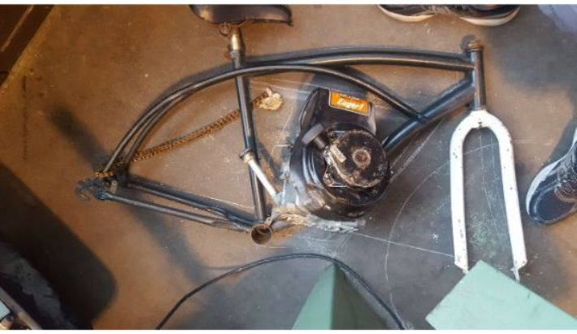 Frame with engine placed on top for layout.
From that picture, its was clear that I would need to replace the down tube in order to accomodate the engine. So, I set to work getting rid of the down tube with a hacksaw and an angle grinder.
Removing the down tube.Down tube gone.
Next, I upgraded the fork. Part of the classic vintage board tracker look is the springer fork. I found one on Amazon and got it.
Springer fork.
To make the fork fit on the headtube like I wanted, I had to turn some aluminum spacers. I made two, one with decorative grooves, one without.
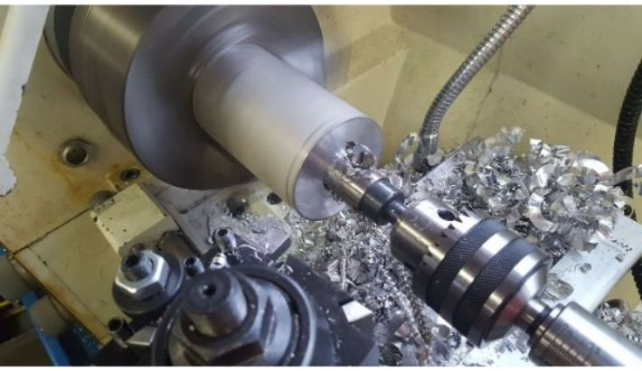 Drilling spacer stock.Finished spacer with decorative grooves.
Both spacers installed (ignore the obviously fabricated frame, I forgot to take pictures at this exact point in the build).
Despite the spacer, I was still left with an absurd amount of threaded mount off of the fork. That had to go.
 Cutting excess fork off.
Cutting excess fork off.
I then bought some really nice cream bike tires, and fitted them to 26 inch mountain bike rims. I also bought and installed disc brakes on the front tire.
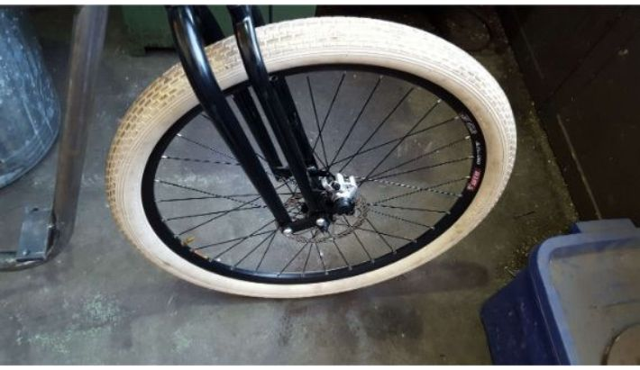 Nice tires(again, ignore the obvious future trip on the frame fabrication).
Then, I had to figure out what my replacement down tube would look like. I used Snapchat for this. Snapchat is a great tool because it allows for easy photo editing. I simply took a picture of my board tracker in Snapchat, and then drew in down tubes and cross tubes until I was satisfied.
High tech Snapchat layout.Even better layout with engine sticker included.
As you can see in the Snapchat screenshots, I wanted to have a down tube with a significant bend towards the bottom. I calculated the angle between the head tube and down tube from the Snapchat image and cut the corresponding angle into a length of 1.25 inch steel round tube, 0.125 inch wall thickness.
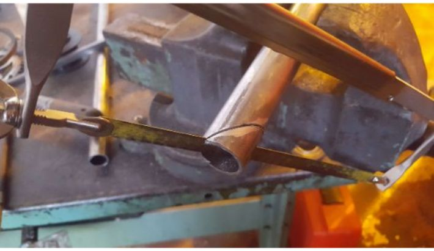 Cutting the down tube stock.
For a better fit up, I ground in notching to the just-cut face of the tube on the bench grinder.
Grinding the notch.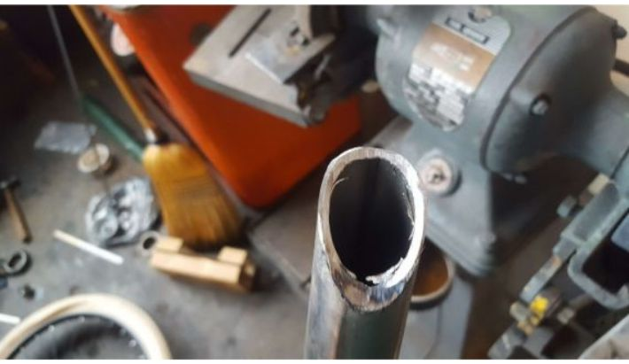 The finished notch.
Decent fit up.
To get the bend, I heated up the tube with an oxy-acetylene torch and wrapped it around a large piece of 7 inch diameter steel round stock.
Bending the tube.The bent tube.
The bent tube mocked up.
With the bend in, I could then mark the uncut end of the tube for cutting, and then cut and grind in the profile of the attachment point. The lower attachment point is the old bottom bracket shell.
Cutting the tube.
I then welded in the new down tube.
Welding the tube in.Weld at the low attachment point (bottom bracke shell).
 Weld at high attachment point (head tube).
Weld at high attachment point (head tube).
Frame at this point in time, with the new down tube welded in.
Next, I had to figure out a way to hold the engine to the frame. I decided to fabricate a couple of large pieces of 0.25 inch thick by 2 inch wide steel flat bar to serve as weld in mounts. I drilled holes in them that matched the bolt pattern on the engine, and once the engine had been positioned where I wanted it to be, I welded them to the frame. One mount was welded right atop the bottom bracket shell, and the other was welded to the downtube.
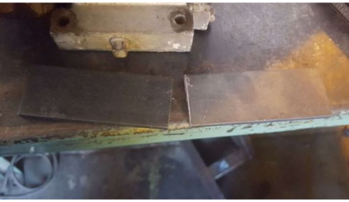 Stock for the engine mounts.Drilling the bolt holes.
Finished mount. 1 of 2.
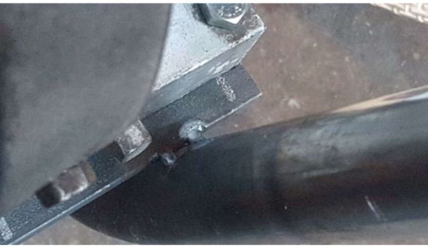 Tacking in the mounts.
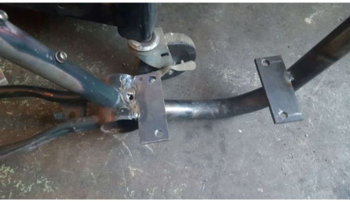 Mounts welded in.
Next, I had to fabricate and install the cross tube. I cut angles into a piece of 1 inch steel round tube, 0.0625 inch wall thickness that matched the profile of the seat tube and the down tube. Then, all I had to do was weld it in.
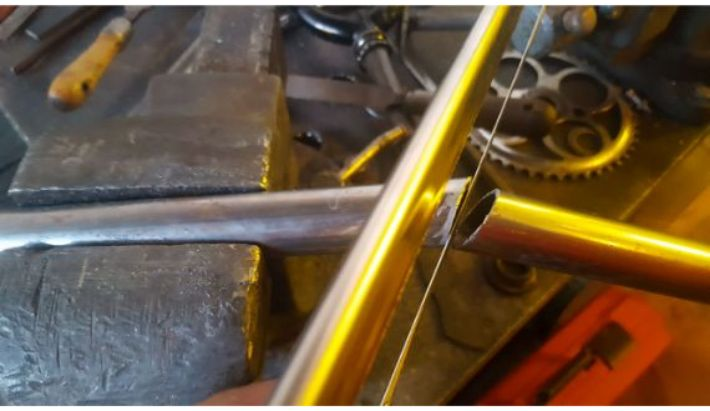 Cutting the cross tube.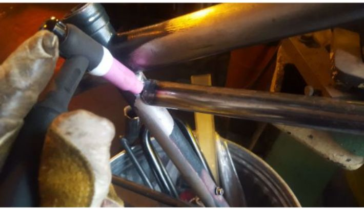 Tacking the cross tube in place.
Cross tube welded in.
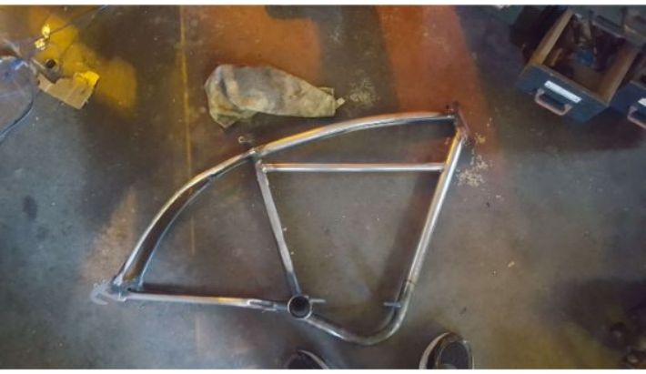 Frame at this point in time.
Here the build has reached a critical point- the determination of the drive gear ratios. This ratio would determine much of the following fabrication, as the rest of the bike would need to be built around the transmission. After much thought, I decided to use a gokart torque converter to serve as an automatic transmission. Assuming 3600 rpm from the engine, and a 1 to 1 ratio to the output shaft on the torque converter at full throttle, I needed to seriously reduce the rpm in order to get a reasonable top speed and decent torque. To avoid using an enormous drive sprocket, I then decided to install a jackshaft to allow an intermediate reduction.
I designed the jackshaft to be a 0.75 inch diameter piece of steel round stock, and I decided it would ride in two flange bearings, which would be mounted to the back of the seat tube
To mount the flange bearings, I cut and ground some brackets from the same stock that I used for the engine mounts, drilled holes in them to match the bolt pattern of the flange bearings, and welded them to the seat tube.
 Grinding out the profile of the bracket.
Grinding out the profile of the bracket.
Welding the bracket to the seat tube.
 Laying out the location of the second bracket.
Laying out the location of the second bracket.
Using the flange bearing as a reference to weld the second bracket in place.
 Flange bearing and jackshaft stock installed.
Flange bearing and jackshaft stock installed.
Back view of the jackshaft.
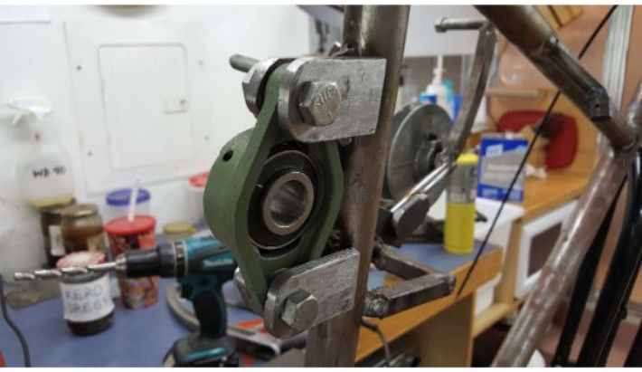 Adding additional support gussets to prevent twisting and bending.
I cut out portions of the old bracket to accomodate the round end of the flange bearing.
Secondary gussetts welded in.
To finish the frame, I just needed to grind out spots in the chain stays and seat stays for chain clearance.
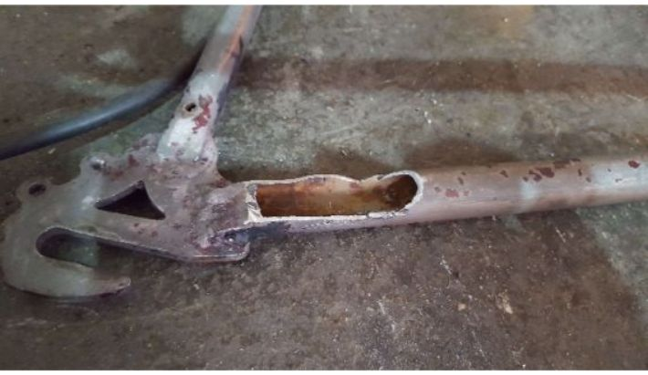 Section of seats stay ground out for drive chain clearance.Piece of sheet metal bent into shape to cover the hole, would eventually be welded on.
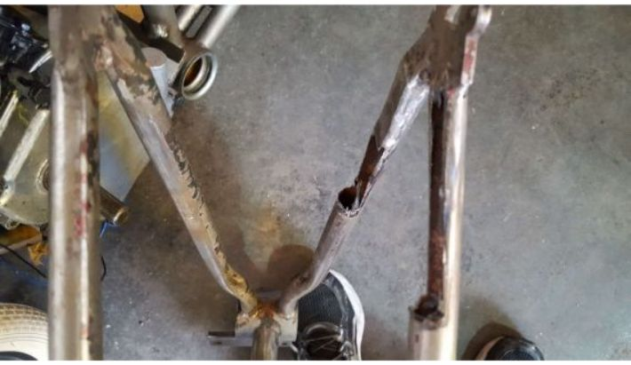 Bottom view of all the sections of seat and chain stay that I ground out.
Grinding out corner of chain stay near bottom bracket to accomodate pedal chainring.
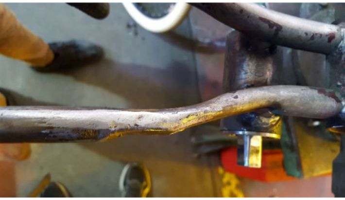 Chain stay hole filled in with weld and ground down.
Gas Tank
The next big fabrication event was the gas tank. This was a very tricky thing to fabricate. The easy way to do it would have been to weld a box out of steel, but I knew I wouldn't be able to live with myself if I did that. Go big or go home, I thought. So I went big.
One of my favorite aesthetic parts of the iconic Indian board tracker is the teardrop gas tank, with the organic curves. I knew I had to replicate that. I formulated a basic plan: I would cut some steel shapes, weld them square, and to get them to curve organically, I would force pressurized water into the tank to blow it up like a balloon.
To get the steel panels, I started by making a styrofoam model of the tank. I made it by spray-gluing a bunch of sheets together into a block, then drawing the profiles of the tank, and then using a hot knife to carve the foam into the final shape.
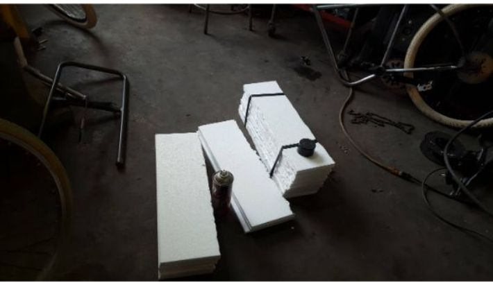 Styrofoam ready to go.Tank profile cut.
Test fitting the tank.
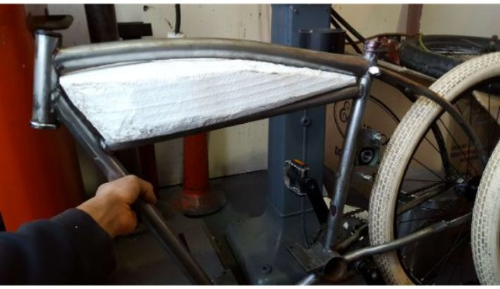 Test fitting the tank from another angle.
To transfer the 3D model to 2D templates, I covered the whole form in tape, and cut along the tape in places where I thought a seam could reasonably go. I then peeled those templates off of the foam and stuck them to the sheet steel, where I could then trace and plasma cut out the profile.
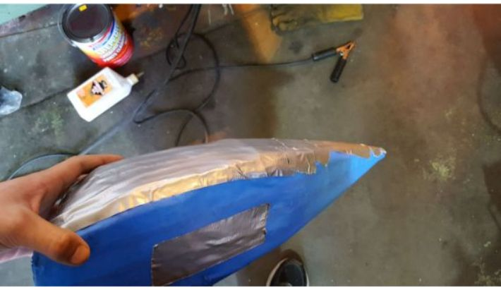 Covering the form in tape.Laying out the position of the gas tank bung and cap.
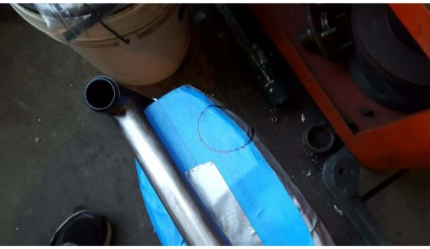 Gas cap location marked.
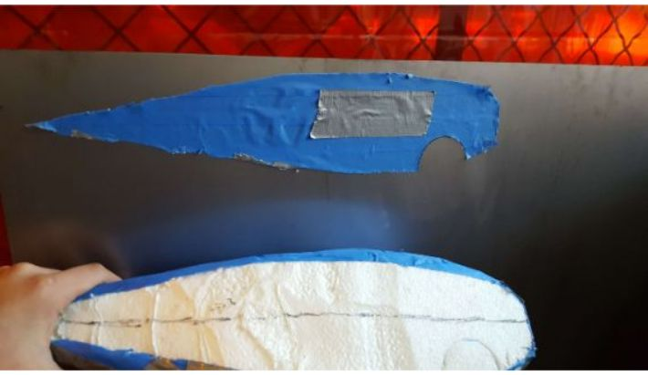 Cutting templates and placing them on the sheet steel.
As you can tell, these templates did not hold up well due to the tendency of the masking tape to rip, so I made a new set of templates from duct tape.
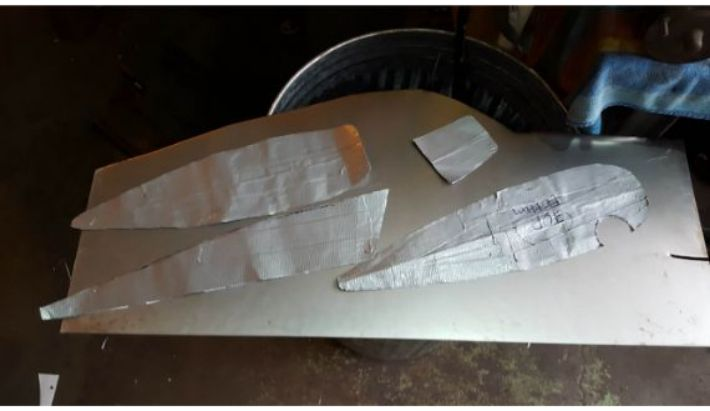 New duct tape templates.Templates traced onto sheet steel.
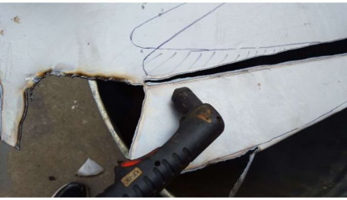 Using the plasma cutter to cut out the shapes from the steel.
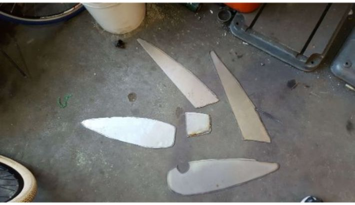 All pieces cut out.
From there, It was just a matter of welding the pieces together and then hydroforming the tank to its final shape.
 Welding tank pieces together.
Welding tank pieces together.
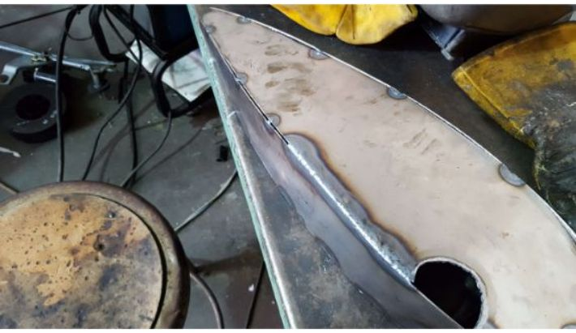 Tank welded up.
Not pictured, I fabricated an adapter out of steel that attached to a friend's electric pressure washer. I welded the adapter into the vertex of the tank. Shout out to Javid Alasti for letting me potentially ruin his family's pressure washer! After filling the tank to the brim with water (to avoid air pockets that could compress and turn the tank into a bomb), I forced a 120 psi stream of water into the tank, which puffed it out quite nicely.
Post hydroforming tank. Notice the delicate curves around the sides.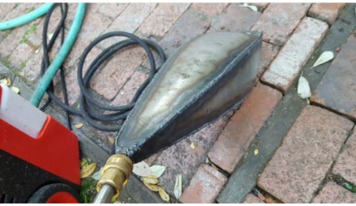 More lovely gas tank footage.
One more shot.
With the hydroforming done, I just had to weld in the bung after cutting out the patch that I had welded on for water proofing. The bung was a weld in kit from eBay that came with a matching cap. I also had to figure out a way to mount the tank to the frame. I decided on fabricating some threaded inserts that I could then weld into the top of the tank, so I could weld corresponding tabs onto the top tube and bolt the tank on through those.
I made the inserts by tapping 1/4-20 thread into some 0.375 inch round steel. I turned a small shoulder to prevent the inserts from falling into their respective holes in the tank, and also to provide some area to weld too.
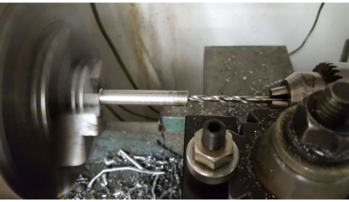 Drilling the stock for the insert.Tapping the insert.
Insert profile shaped, parting it off.
Finished inserts.
Hole drilled in gas tank, ready to accept insert.
Insert in place.
Inserts welded in.
Tabs welded to top tube, gas tank bolted down.
Next, I drilled a hole in the bottom of the tank and silver-brazed in a brass barb fitting to accept flexible fuel lines.
Brazing in the barb fitting.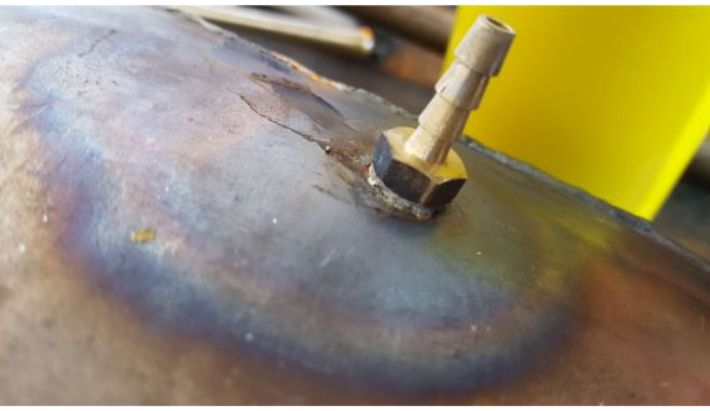 Another shot of the fitting, brazed in.
The Seat
Another iconic part of the board track racer is the leather saddle seat. Looking online for one only yielded crappy cardboard knockoffs or $300 art pieces. So, I decided to make my own.
I started the build by fabricating a seat pan out of 0.125 inch thick sheet steel. I drew an outline on the plate, and then cut it out with the plasma cutter. I bent the pan to its final profile by heating it up with the oxy-acetylene torch and then hammering over the same steel form that I used to bend the down tube.
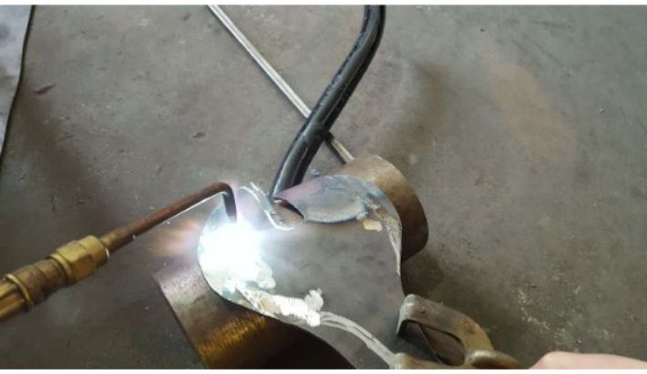 Bending the seat pan.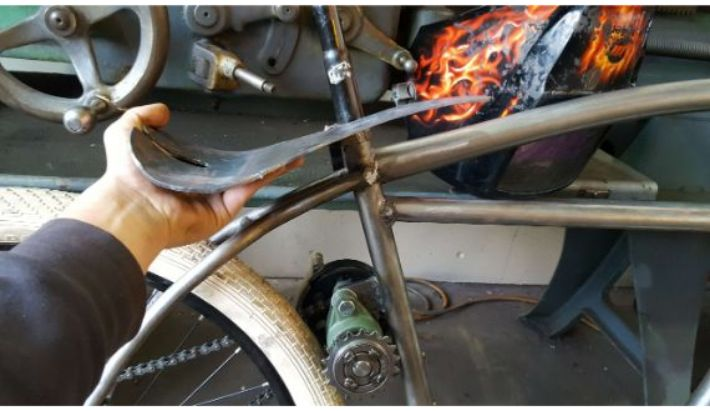 The bent seat pan.
Then, I welded a piece of steel tube to the bottom of the pan to act as a seat post.
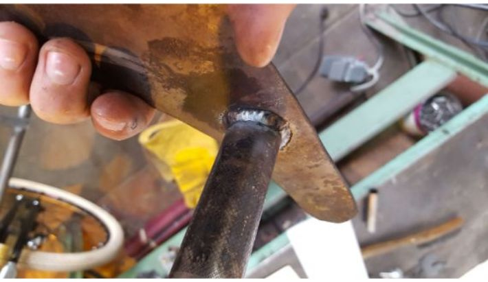 Seat post welded on.Another view of the seat pan.
The tracker at this stage of the build, minus gas tank.
As you can tell from the picture above, the seat pan is only supported by the seat post at the very front, and would likely bend if sat on. To prevent this, I needed to weld up a rear support. I fabricated the support out of three sections of 0.5 inch square tubing welded into a triangle shape to meet the cross support at the top of the chain stays.
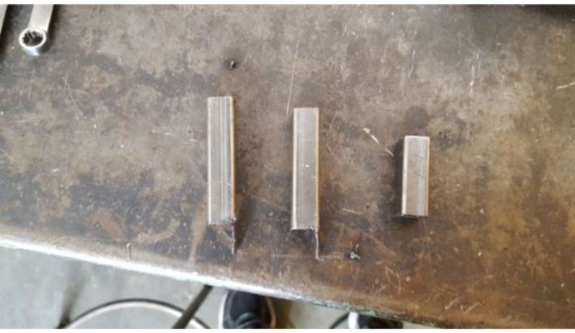 Three sections of tubing for the support.Tacking up the support.
Welds on the supports ground down
Support welded to the seat pan. Note how the support rests on the small cross bar between the top of the chain stays.
For the cushioning, I used closed cell foam from an old package, which was about 1 inch in thickness. I used household goop to stick the foam to the pan, before shaping the foam with a hot knife to the final profile.
Gluing down the foam to the pan, using steel blocks to keep the foam in place.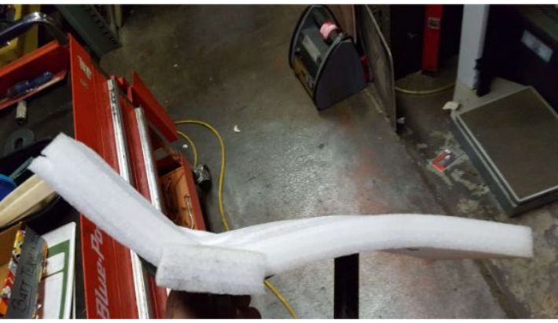 The foam, glued down.
The next part was adding the leather. I found a buck skin on eBay for $35 and pulled the trigger on it. When the skin arrived, I cut out two oversized profiles out of the hide, and used household goop to stick one to the underside of the pan. Following that, I trimmed the edges of that profile to protrude off the pan by 0.25 inches. Then, I pulled the top profile taut around the foam, and clamped it to the edges of the underside profile using binder clips. I used white tacky glue to stick the edges together. I finished the leather work by using an awl to poke evenly spaced holes all around the edge of the seat before stitching it together with waxed thread. I then trimmed the edges, and the seat was done.
Clamping the profiles with the binder clips, waiting for tacky glue to set.View of the underside profile.
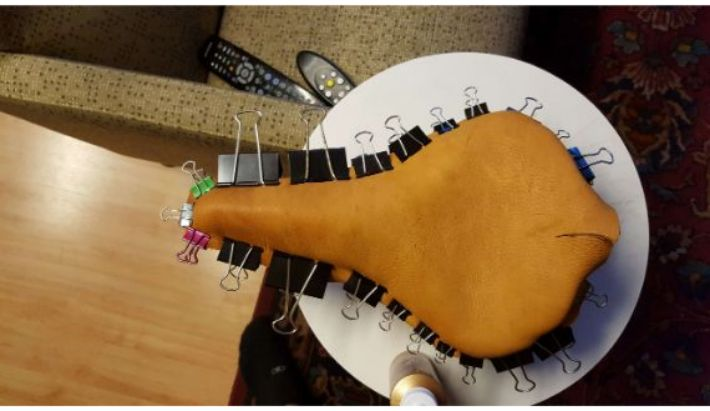 Top view.
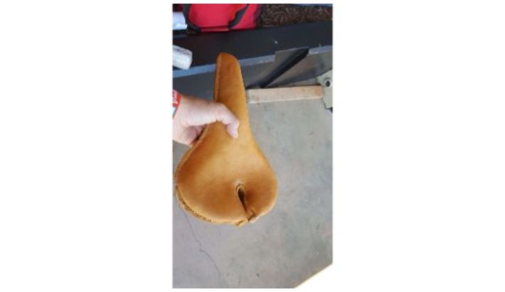 The seat after stitching.
The Throttle
No motorcycle is complete without an internal throttle. Of course, I had to build mine custom. This is one of the more complex mechanisms in the build.
So how does an internal throttle work? Well, as you can see in the picture above, there are three main components: an inner sleeve with a slot cut parallel to its axis, an outer sleeve with a slanted slot cut into it, and a plug with a ride peg that, well, rides in the slots. These pieces are held concentric to each other with bearings. The basic idea is that the plug rides smoothly in the inner sleeve as the ride peg rides the slot. This whole assembly is fixed to the handle bar, and the outer slot shell goes over it, so the ride peg rides both in the straight slot and the slanted slot. When the outer slotted shell is rotated forwards, the slanted slot forces the ride peg to move alobg the straight inner slot, causing the displacement needed to actuate the throttle on the carburetor.
Fabrication began with the creation of two endcaps for the inner sleeve (a length of 1 inch dia. 0.0625 inch wall thickness steel round tube), which would eventually hold the bearing and mount to the handle bar. Unfortunately, I lost the footage of machining the inner sleeve, which basicaally just consisted of milling the straight lengthwise slot. I turned the endcaps out of 1 inch solid round steel bar, and cut threads into them to accept the handle bar and bearing mounting axles. On the thicker endcap closest to the handlebars, I drilled and tapped some holes to accept eye bolts to hold the return springs.
Turning down the stock to make an endcap.Drilling the hole for tapping the endcap.
Tapping the endcap to accomodate a mounting axle.
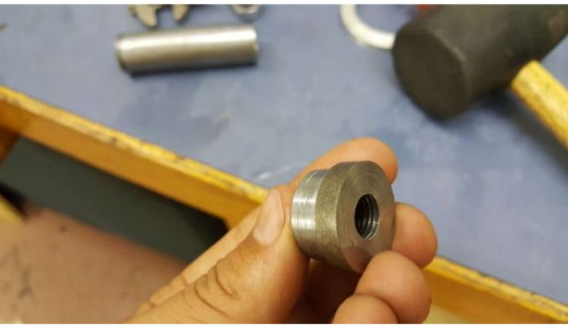 Completed endcap.
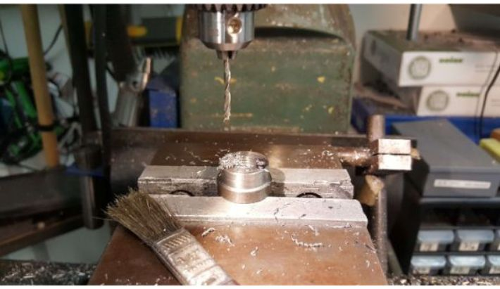 Drilling holes for eyebolt tapping.
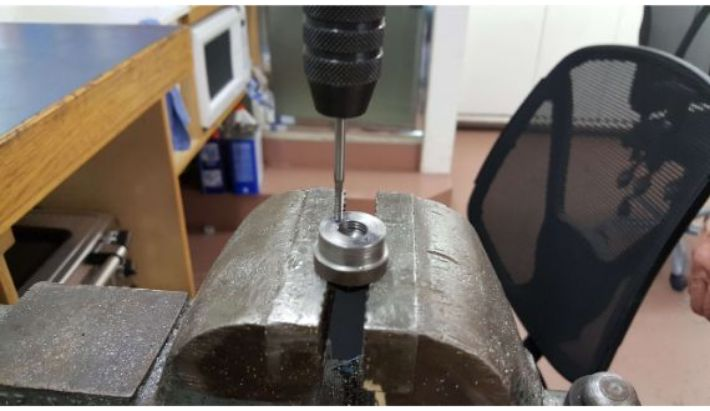 Tapping the holes for the eye bolts.
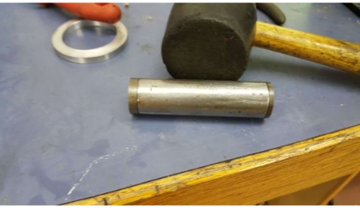 Endcaps in the inner sleeve.
To make the handlebar mounting axle, I turned a shoulder onto a length of 0.5 inch steel hex stock and cut threads around the outside that matched the threads on the endcap. I also drilled a hole through the entire length to fit the throttle cable.
Cutting threads on the shoulder to match the endcaps.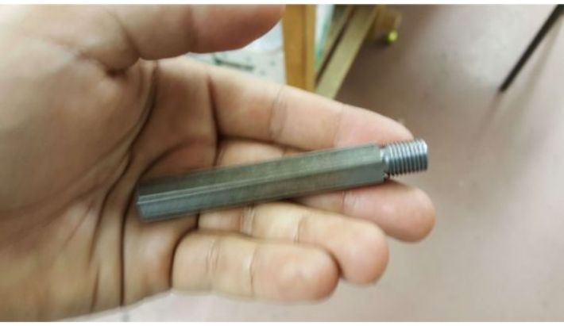 Finished (and blurry) handlebar mounting axle.
Handlebar mounting axle threaded into the endcap.
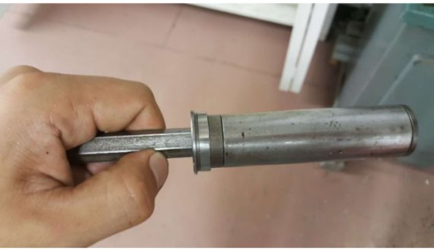 Matching hex precision bearing slid onto the mount.
Then, I fabricated the much stubbier bearing mount for the other endcap in the same way as the other, with the slight difference of also internally tapping it 1/4-20 to fit a retaining bolt.
Drilling the mount for tapping.Tapping the mount for the retaining screw.
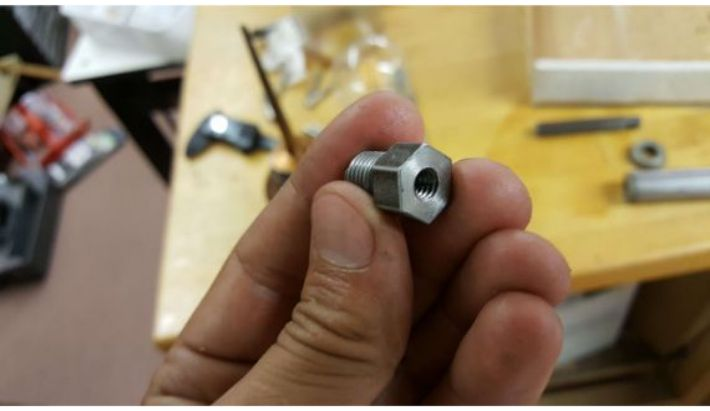 Finished mounting axle.
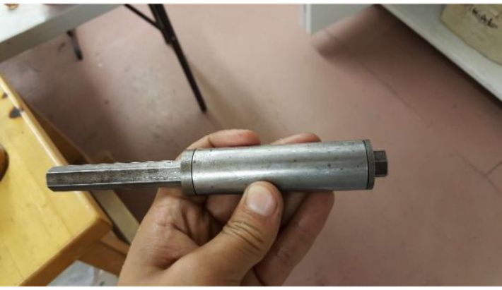 Throttle assembly at this point.
Hex bearings added, retaining screw shown to keep the outer bearing from falling off.
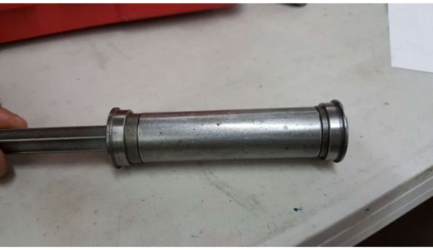 Another view of the throttle assembly.
Again, the idea is that the outer slotted shell rides on these bearings. To make the outer shell, I started by turning down some thick wall steel tubing of 1.125 inner diameter. After that, I drilled two offset 0.25 inch holes, and used an angle grinder and a file to cut the slanted slot between them.
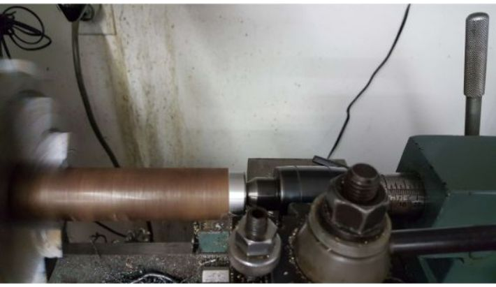 Turning down the stock for the outer sleeve.The outer sleeve blank, hot off of the lathe.
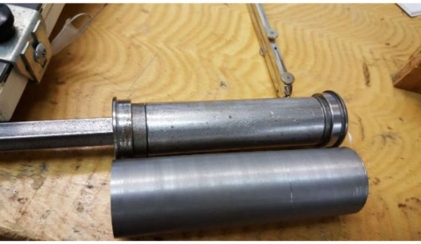 Side by side layout of the throttle assembly and the outer sleeve.
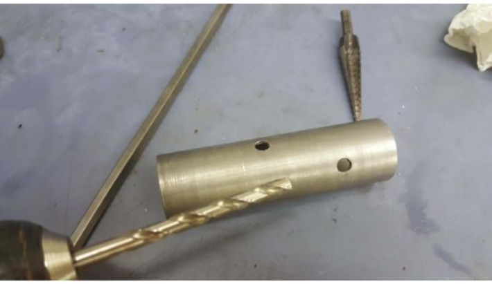 Drilling the holes for the slanted slot in the outer sleeve.
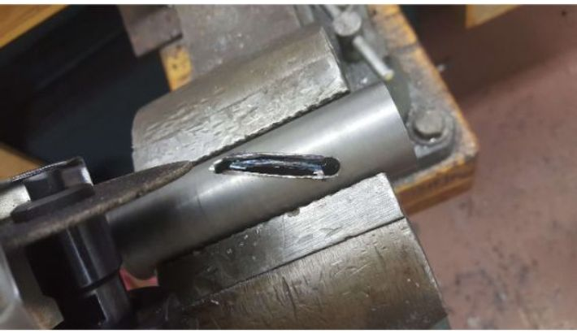 Angle grinding the slot profile.
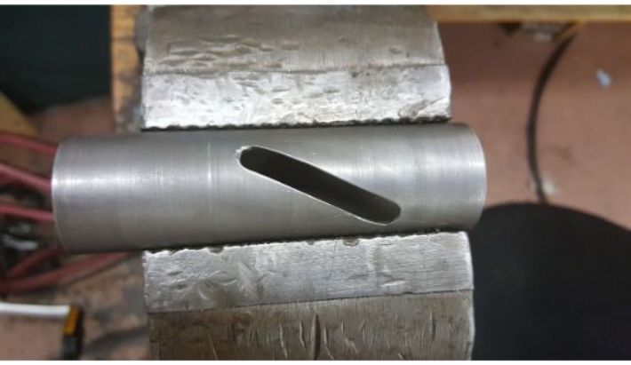 Slot profile after being cleaned up with a file.
Next, I started fabricating the internal plug. I turned down a slug of steel 0.875 inches in dia. from 1 inch dia. round bar steel stock. I polished it to minimize the friction it would experience on the inside of the internal sleeve. I drilled a hole lengthwise through the center to hold the throttle cable. Then, I drilled and tapped a hole for a 6-32 bolt that would hold down the brass ride peg. Finally, I turned some brass stock down to 0.25 inch dia., and drilled to fit the bolt.
Turning down the stock for the plug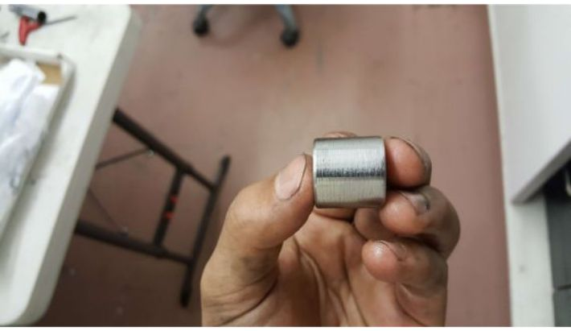 The polished plug.
 Drilling the plug for the ride peg.
Drilling the plug for the ride peg.
Plug drilled for throttle cable.
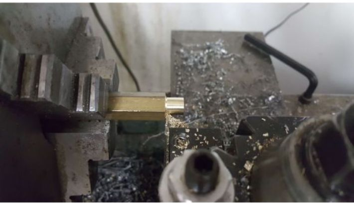 Turning down the brass stock for the ride peg.
The finished ride peg insert.
To mount the throttle assembly to the handlebars, I first had to cut a chunk of the right handlebar off to compensate for the extra length of the throttle. Cutting off a piece of the handle bar.
To actually fit the mounting axle into the handlebar, I had to make a spacer. I just turned down some aluminum stock to fit in the handlebar and drilled a hole in it to fit the mounting axle.
Turning down aluminum spacer stock.Finished spacer.
Mounting axle in the spacer in the handlebar.
To hold everything in place, I drilled a hole through all of the parts and tapped it to fit a 6-32 set screw.
Tapping the hole for a set screw.Two set screws in place.
Throttle assembly finished and installed.
For cable routing, I drilled a hole at the base of the handle bars and inserted a rubber grommet to prevent the cable from fraying on the hole's edges.
Drilling the routing hole.Rubber grommet.
The Engine
I got the engine for this project from an old edge trimmer. Its a Briggs and Stratton 3hp 4 stroke engine. The first thing I did with it was getting rid of shroud so I could install my own pedal start. This left the flywheel exposed, introducing the risk of getting my leg turned into ground meat by the cooling fins. So I chopped those flush with the aluminum magnet holder and then milled them flat. And thats the only big modification I had to make to the engine.
The edge trimmer from which I extracted the engine.Taking a grinder to the cooling fins.
Post-grinder flywheel.
Milling the fins flat.
The Exhaust
For the exhaust, I welded an old Briggs muffler to a hotdog style muffler, before welding the body of the system in conduit and elbow bends. Unfortunately, this footage was not captured. I fabricated a pair of matching flanges to act as attachment points for the exhaust setup, and allow me to remove the exhaust if I need to.
I made the flanges out of some scrap 0.125 inch plate, and welded pipe threading to them to match the pipe fittings that come off of the engine's exhaust port. I started by cutting and grinding them to shape, and then drilled matching holes in them. Unfortunately that footage was lost as well. I then tapped the outer holes to accept the 6-32 bolts that keep the flanges pressed together.
The flange blanks- sorry for losing the fabrication footage.Tapping the holes.
Flanges bolted together.
Welding on the pipe thread.
One flange was welded to pipe thread to screw into the elbows coming off of the engine, and the other flange was welded direct to the exhaust line.
To mount the exhaust to the frame of the tracker, I fabricated a threaded insert to be welded to the down tube out of some 0.375 inch dia. steel round bar.
Drilling the threaded insert.Tapping the threaded insert 1/4-20.
Parting off the insert.
The finished insert.
Welding the insert to the down tube.
Welding the exhaust to the other flange.
The flange, welded.
I then welded a tab with a hole drilled into it to the exhaust, so it could be bolted to the insert.
The tab.The tab, welded on.
The finished exhaust setup (ignore the belts and pulleys- remnants from a failed iteration).
The Bottom Bracket
To fit the pedal start system that I wanted, I had to lower the position of the bottom bracket so that the chainring could clear. To do this, I hacked a bottom bracket off of a kids bike and welded it in the position I wanted. There was a flat plate right beneath the chain stays that I welded standoffs to in order to hold the bottom bracket shell at the proper position.
Cutting the bottom bracket off of a kids bike.Fitting a standoff.
Coping another standoff to fit the curvature of the bottom bracket.
Another view of the coping process.
Bottom bracket shell welded to standoffs, welded to the frame and chain stay plate.
The Pedal Start
With the bottom bracket shell installed, I could proceed with the pedal start system. This was another tricky mechanism to figure out. I wanted to be able to pedal the bike like a normal bicycle, as well as be able to start the engine with the pedals. How was I going to be able to pedal the tracker like a normal bike without kicking the engine over? A freewheel and some pins, basically.
I fabricated an intermediate shaft to be placed between the pedals and the flywheel of the engine, held down just under the engine mounts. The idea was that he pedals would be connected to a freewheel on this shaft that engaged when the pedals are pedaled forwards. This freewheel would be mounted to a free spinning roller hub on the shaft. Just adjacent to this roller hub would be an identical, independent free rolling hub that had a sprocket mounted to it. This sprocket would be linked by chain to another sprocket on the flywheel of the engine. There would be holes drilled in this sprocket to fit steel pins, and matching sleeves would be welded to the other roller with the freewheel attached. These pins would be inserted when I wanted to start the engine, mechanically connecting the freewheel roller to the sprocket roller, allowing the pedals to transmit force to rotate the flywheel.
When I wanted to manually pedal the bike, I could then simply remove the pins, and with the rollers no longer mechanically connected, I could pedal without transmitting any force to the flywheel.
I began the fabrication by making a freewheel hub out of some aluminum. I cut threads in the stock to allow the freewheel to thread right on. I then drilled a hole in the aluminum so it could fit over the 1 inch dia. steel tube I was using for the roller stock. I put two set screws in the aluminum hub to fasten it to the roller.
 Thread cutting on the aluminum freewheel hub.
Thread cutting on the aluminum freewheel hub.
Freewheel mounted on hub.
Thread cutting on the aluminum freewheel hub.
Then, I fabricated the intermediate shaft. I started by cutting a length of 2 inch wide by 0.25 inch thick steel bar the same width as the engine mounts. Then, I drilled matching bolt holes in the bar. I then cut three lengths of 0.5 inch dia. steel round bar, two short peices the same size to act as standoffs, and one long piece that I tapped 1/4-20 on one end for the shaft itself. I welded the standoffs to the steel bar, then the shaft to the standoffs before bolting it into under the front engine mount.
The mounting plate, with holes drilled.One standoff welded to the shaft.
Standoff and shaft welded to the mounting plate.
Both standoffs welded on, completing the shaft assemmbly.
I then bored a #25 chain sprocket to fit the same diameter roller as before, and attached it with set screws to a roller similar to the one holding the freewheel. The rollers were pretty simple, just the 1 inch tube with 0.5 inch ID bearings inside them to fit the shaft.
Freewheel and sprocket mounted to rollers, mounted to the shaft and kept in place by a 1/4-20 bolt.Shaft assembly bolted to underside of front engine mount.
Next, I had to mount a bike sprocket to the chainring and crank set that I was using for the pedals. This sprocket would be the one connecting the pedals to the freewheel. To mount the sprocket, I turned a hub on the lathe out of aluminum and bolted the sprocket right to it. Then I bolted the hub to the chainring/ crank assembly. The chainring/crank assembly was pulled from the same kids bike that I took the bottom bracket from (I needed short kids cranks to clear the flywheel)
The hub.Sprocket on the hub.
Hub drilled and tapped to accept the sprocket.
 Sprocket, bolted on.
Sprocket, bolted on.
Back of hub drilled and tapped to bolt on to chainring.
Hub bolted to the chainring.
Sprocket attached to assembly.
To replace the original pull start, which also acted as a nut holding on the flywheel, I tapped a small #25 sprocket to serve the same purpose. This sprocket connected to the sprocket on the pedal start shaft via chain. To prevent this sprocket from coming unthreaded, I turned an aluminum sleeve to go over the crankshaft. I tapped the crankshaft, and then bolted the spacer on.
Tapped sprocket.Spacer to retain flywheel sprocket.
All chains connected; from pedals to freewheel and from sprocket to flywheel.
The Track Stand
Another classic part of the board tracker aesthetic is the trackstand. The trackstand not only supports the bike when it is not in motion, it also suspends the rear wheel and so allows the rider to start the engine more easily. I fabricated it completely out of 0.625 inch dia. steel round tube. I cut a bunch of lengths and welded them together for the basic frame, and then turned some brass bushings for the stand to pivot on. The pivots allow the stand to swing up around the wheel to rest behind the seat when not in use. To mount the stand to the bike I had to weld extensions to the dropouts. These extensions were then drilled and tapped 1/4-20, and the stand could then be bolted on. Finally, "Y" arm supports were welded to the track stand, and hard stop pegs were added to the chain stays.
 Laying out the steel for welding.
Laying out the steel for welding.
Basic frame welded.
Cut pivots.
Turning brass bushings.
Pivots welded on, bushing installed.
Steel dropout extensions.
Extensions welded on.
Welds ground flush.
Trackstand bolted to dropouts (lost footage of drilling and tapping the dropouts, sorry).
Side view of trackstand at this point. Sidenote- check out that pedal start chain linkage in all its glory
"Y" arm welded to track stand, and hard stop welded to chain stay.
Finished track stand.
The Jackshaft
Finally, we revisit the jackshaft, which has since been cut to length and keyed. The main purpose of the jackshaft is to provide an additional gear reduction between the torque converter and the wheel. However, since the drive chain is connected to the wheel via sprocket, force is applied through it to the torque converter to the crankshaft, essentially nullifying all the freewheel work in the pedal start that was supposed to fix the problem of accidentally starting the engine when trying to pedal normally. So, not only did I have to make a hub for the sprocket for the reduction, I had to make it a freewheel hub to prevent force from being transferred from wheel to crankshaft.
To make the freewheel hub, I turned two discs of aluminum that could sandwich a bicycle frewwheel. I then drilled holes in these rings between the teeth of the freewheel so I could run bolts through the discs and prevent the freewheel from rotating. I filled the gaps between the bolts and the teeth with aluminum spacers. Then, I centered this hub on the reduction sprocket, and drilled and tapped matching holes to mount the hub. Finally, I took the jackshaft drive sprocket and thread cut the outside of it to thread into the inside of the freewheel.
Aluminum disc hub with holes drilled.Hub mounted to reduction sprocket, jackshaft drive sprocket installed.
Side view. Note how the aluminum discs clamp the freewheel, and how the small aluminum spacers occupy the space between the teeth and the bolts.
To keep the jackshaft drive sprocket from unthreading, I made a steel bearing support that presses between the sprocket and the flange bearing supporting the jackshaft, blocking it from coming out.
Bearing support.
 Bearing support installed.
Bearing support installed.
And that concludes the build! This thing took two years to complete, what is uploaded here is the footage of the successful iterations. There were two full other iterations that failed before this successful one. The reason why some footage is missing is that towards the end, I had less confidence that what I was working on would work, and so I took less pictures anticipating failure. My perseverance payed off! The tracker is a blast to ride, and it goes about 30-35mph. It also looks and sounds super cool. Thanks for sticking with the build!
 Done!
Done!